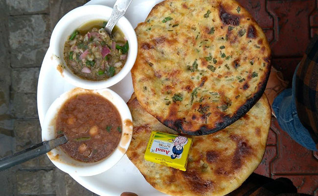
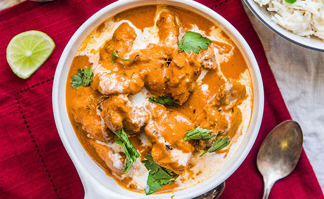

From Delhi’s Chandni Chowk to India Gate, the Delhi Blog is a place where you’ll find all the hidden gems and tourist places to plan a perfect trip to Delhi, India’s capital. The capital city is brimming with historical monuments, UNESCO World Heritage sites, cafes, bars, a lit nightlife and delicious street food. Explore the narrow lanes of Old Delhi, soak in the old world charm of Qutub Minar, and go on a food trail in the scanty lanes of Chandni Chowk. You can find all those and lots more in this Delhi travel blog. Discover all the hyperlocal gems, dine on Mughlai curries, know the best bars to visit to witness a thriving nightlife and Delhi’s top notch crowd. Explore all the best street food joints to enjoy the Delhi(cacies) with your loved ones and make your trip to Delhi a fulfilling one. Delhi is the melting pot of culture with so many shopping destinations and places to explore that you’ll be spoilt for choice. This blog will lessen your worries and ensure you have the perfect itinerary to explore all the spectrums of Delhi’s culture, history, food and nightlife. What are you waiting for? Read on to know more and plan a perfect vacation to the capital city with your loved ones!
Things to do in Delhi
Jama Masjid: the Friday Mosque

Jama Masjid – also known as the Friday Mosque – is the largest mosque in India. The dimensions are astounding: there is space for 25,000 people here. The mosque is located in the centre of old Delhi and is one of the city’s main attractions. With its characteristic red sandstone and white marble construction, the mosque is a masterpiece of Mughal architecture. The two 40 metre high minarets are also eye-catching. You can climb one of these and enjoy a panorama view of Delhi from above. We can highly recommend visiting the mosque first thing in the morning. We were there shortly after opening and other than us, there were only a few people there who had come to pray. Perfect lighting, perfect atmosphere!
Red Fort (Lal Qila)
.jpg)
Delhi’s landmark and the most famous sight in Old Delhi is the Red Fort. It is located just a stone’s throw away from the Jama Masjid. The name says it all: this fortress was building using red standstone. The Red Fort has been a UNESCO World Heritage Site since 2007.
The entire area is very extensive and of course worth seeing, but we think that something more could be done with it. Perhaps it was the midday heat that dampened our spirits a little.
Humayun Mausoleum

The Humayun Mausoleum is a little reminiscent of the Taj Mahal and is said to have even served as its template.
The mausoleum is considered one of the oldest Mughal tombs in Delhi and one of the most magnificent buildings in the city.
Eating in Delhi: Culinary Tips
Aloo Ke Kulche And Chole

If you are in Delhi and you haven’t tried this lip-smacking Aloo Kulcha and Chole then, what are you waiting for? The savoury taste of this traditional food of Delhi might bring tears to your eyes but, you will crave more. You can find people selling it in small shops, but the taste will be mouth-watering. So, keep everything aside and try this famous food of Delhi –
Aloo Kulcha and Chole along with tangy pickle and lassi if you like.
Butter Chicken

Butter Chicken has a good history associated with Moti Mahal, Daryaganj. Back in the 1950s, some tandoori chicken pieces were left at night. So, in the morning, the cook accidentally tossed tandoori Chicken in tomato, online and butter. From then, the rest is history. It has been the signature popular food of Delhi that people started cooking in cream, tomato, onion gravy with a pinch of sugar.
So, if you are ever visiting Delhi, go straight to Moti Mahal, and they have this signature dish available in its raw taste.